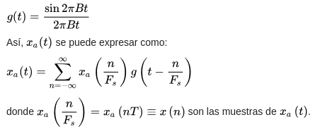
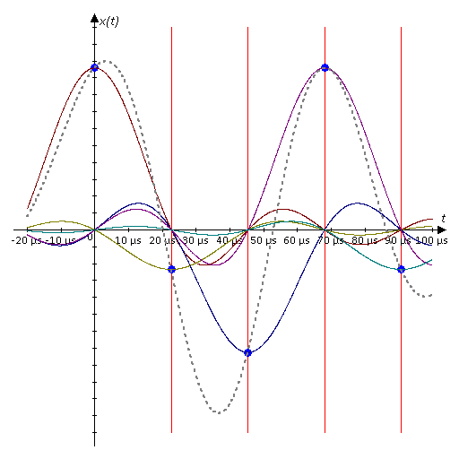

Dibujar y explicar las principales diferencias entre el modelo OSI y TCP/IP
Ambos usan el tipo de conmutación por paquetes, sus capas de red y transporte son similars. Ambos tienen capa de aplicación pero incluyen servicios muy distintos.Mientras que OSI deja en claro la separación entre protocolos, servicios e interfaces, TCP/IP no.
El modelo OSI fue creado por la ISO antes que los protocolos para cada una de sus capas, por ello no todos los protocolos funcionan correctamente con este modelo. Lo contrario pasa con TCP/IP.Esquematizar y explicar los modelos OSI y TCP/IP
OSI TCP/IP Aplicación Aplicación Presentación Sesión Transporte Transporte Red Red Enlace Interfaz de Red FísicaEl modelo OSI
Capa física Se lleva a cabo latransmisión de bits puros a través de algún canal de comunicación
. Además se encarga de definir elmedio físico
, lascaracterísticas de los materias que se usan en la transmisión
, maneja las señales eléctricas, etc. Capa de enlace de datos Asegura unatransmisión libre de errores y controla el flujo de datos
, por la diferencia de procesamiento que pueden tener los dos equipos en cuestión, agrupa los bits en tramas de datos y las transmite de forma secuencial, también provee servicios a la capa de red y controla el acceso al medio. Se divide a su vez en dos subniveles:LLC(control de enlace lógico) y MAC (control de acceso al medio)
. Capa de red El objetivo es hacer que los datos lleguen desde el origen al destino, aún cuadno ambos no estén conectados directamente, es decirresuelve el dirreccionamiento entre redes
. La unidad de información se denomina paquete. Capa de transporte Esta capa acepta los datos provenientes de capas superiores, los divide de ser necesario, y luego los pasa a la capa de red aesgurándose de que todas las piezas lleguen correctamente. La unidad de información se denomina segmento o datagrama. Capa de sesión Es la capa que se encarga de mantener y controlar el enlace establecido entre dos computadores que están transmitiendo datos de cualquier índole. Permite que los usuarios de máquinas diferentes establezcan sesiones entre ellos. Una sesión ofrece varios servicios:control del diálogo (establece quién puede transmitir en detemrinado momento), administración de token (que no puedan realizar la misma operación crítica al mismo momento), sincronización (coloca puntos de referencia para poder continuar desde éstos luego de una caída de la red)
. Capa de presentación Se ocupa de la semántica y sintaxis de la información con el fin de quecomputadoras con distintas presentanciones de datos puedan comunicarse
. Capa de aplicaciónOfrece a las aplicaciones la posibilidad de acceder a los servicios de las demás capas y define los protocolos que utilizan las aplicaciones para intercambiar datos, como correo electrónico, gestores de bases de datos y servicios de ficheros
. Hay tantos protocolos como aplicaciones distintas y puesto que continuamente se desarrollan nuevas aplicaciones el número de protocolos crece continuamente. Cabe aclarar que el usuario normalmente no interactúa directamente con el nivel de aplicación. Suele interactuar con programas que a su vez interactúan con el nivel de aplicación pero ocultando la complejidad subyacente.Modelo TCP/IP
Este modelo fue el utilizado en la primera red amplia de computadoras ARPANET. Posee 4 capas.Capa de interfaz de red También denominada capa de host de red. Esta es la capa que maneja todos los aspectos que un paquete IP requiere para efectuar un enlace físico real con los medios de la red. Son funciones de esta capa: la asignación de dirreciones IP a las direcciones físicas, el encapsulamiento de los paqutes IP en tramas. Basándose en el tipo de hardware y la interfaz de la red, la capa de acceso de red definirá la conexión con los medios físicos de la misma. ... ... (COMPLETAR)
Teorema de muestreo de Nyquist-Shannon
Aca se viene la parte buena,desarrolla aquí el temilla amiguillo ... También conocido como teorema de muestreo de Whittaker-Nyquist-Kotelnikov-Shannon o bien teorema de Nyquist, es un teorema fundamental de la teoría de la información. El teorema trata del muestreo, que no debe ser confundido o asociado con la cuantificación, proceso que sigue al de muestreo en la digitalización de una señal y que, al contrario del muestreo, no es reversible(se produce una pérdida de información en el prceso de cuantificacion, incluso en el caso ideal teórico, que se traduce en una distorsión conocida como error o ruido de cuantificación y que establece un límite teórico superior a la relación señal-ruido). Dicho de otro modo, desde el punto de vista del teorema, las muestras discretas de una señal son valores exactos que aún no han sufrido redondeo o truncamiento alguno sobre una precisión determinada, es decir, aún no han sido cuantificadas.Descripción matemática
El teorema demuestra que lareconstrucción exacta de una señal periódica continua en banda base a partir de sus muestras, es matemáticamente posible si la señal está limitada en banda y la tasa de muestreo es superior al doble de su ancho de banda
. Dicho de otro modo, la información completa de la señal analógica original que cumple el criterio anterior está descrita por la serie total de muestras que resultaron del proceso del muestreo. No hay nada, por tanto, de la evolución de la señal entre muestras que no esté perfectamente definido por la serie total de muestras. Si la frecuencia más alta contenida en una señal analógica $ x_a(t) $ es $ F_{max} = B $ y la señal se muestrea a una tasa $F_s > 2 F_{max} = 2B $, entonces $x_a(t)$ se puede recuperar totalmente a partir de sus muestras mediante la siguiente función de interpolación:  Hay que notar que el concepto de ancho de banda no necesariamente es sinónimo del valor de la frecuencia más alta en la señal de interés. A las señales para las cuales esto sí es cierto se les llama señales de banda base, y no todas las señales comparten tal característica ( por ejemplo, las ondas de radio en frecuencia modulada). Si el criterio no es satisfecho, existirán frecuencias cuyo muestreo coincide con otras (el llamado aliasing).Banda base Se refiere a la banda de frecuencias producida por un transductor, tal como un micrófono, un manipulador telegráfico u otro dispositivo generador de señales que no es necesario adaptarlo al medio por el que se va a transmitir. Ejemplo de reconstrucción de una señal de 14,7 kHz (línea gris discontinua) con sólo cinco muestras. Cada ciclo se compone de sólo 3 muestras a 44100 muestras por segundo. La reconstrucción teórica resulta de la suma ponderada de la función de interpolación g(t) y sus versiones correspondientes desplazadas en el tiempo g(t-nT) con -inf < n < inf, donde los coef. de ponderación son las muestras x(n). En esta imágen cada función de interpolación está representada con un color (en total, cinco) y están ponderadas al valor de su correspondiente muestra (el máximo de cada función pasa por un punto azul que representa la muestra).Banda base es la señal de una sola transmisión en un canal, banda ancha significa que lleva más de una señal y cada una de ellas se transmite en diferentes canales, hasta su número máximo de canal.
En los sistemas de transmisión, la banda base es utilizada para modular una portadora. Durante el proceso de demodulación se reconstruye la señal banda base original. Por ello, podemos decir que la banda base describe el estado de la señal antes de lam modulación y de la multiplexación y después de la demultiplexación y demodulación.
Ruido y fórmulas para los diferentes tipos de medios
Notación [bits/seg] = bps, [baudio] = símbolos/seg (S/N)[dB]: SNR[dB] = 10log 10 (SNR) (Para pasar de dB a SNR explicación) Shannon: C[bits/seg] = B * log 2 (1+S/N) En la fórmula de Shannon, C es la velocidad (capacidad) máxima en bps B es el ancho de banda en Hz y S/N es la relación señal a ruido (signal/noise).Para cualquier sistema de transmisión con un determinado ancho de banda y con una relación dada de señal a ruido, limita la velocidad máxima en bps que se puede obtener,
sea técnica de transmisión empleada. Nyquist: C = 2B * log 2 (M) [bits/seg] C es la capacidad máxima en bps = tasa de datos máxima = velocidad máxima del canal = máxima capacidad de transmisión. B es el ancho de banda, y M es la cantidad de niveles. Ambas fórmulas están estrechamente relacionadas y partiendo de la máxima capacidad calculada por Shannon en base a la SNR del canal, podemos despejar el número de niveles necesario para lograr la máxima velocidad de transmisión.Siempre será la relación SNR indirectamente la que me limitará la cantidad de niveles paraque no se confundan la señal real con el ruido térmico, y así pueda regenerarse la señal correcta en el receptor
.C vale lo que calculamos anteriormente con la formula de Shannon y ahí podemos despejar M, es decir que los niveles (M en la fórmula de Nyquist) están limitado por Shannon. Los niveles son como (0 y 1 de forma un gráfico cuadrado) que se utilizan para modular la señal senoidal o algo así para acordarme, si la potencia es más alta entonces la relación S/N es menor entonces se requiere más niveles para diferenciar los 0 y 1.
¿Se puede aumentar la velocidad de un canal que opera en el límite de Nyquist aumentando los niveles de transmisión? ¿Y lo mismo en Shannon?
No se puede aumentar la velocidad de un canal que opera en el límite de Nyquist pues no podemos aumentar los niveles de transmisión sin que se pierda información, porque la señal se empezará a confundir con el ruido. En cambio en Shannon, si aumentamos primero la potencia (es decir el cociente señal-ruido) y luego sí aumentalos los niveles, en este caso no habría problema.Se quiere aumentar la velocidad en un enlace que ya opera al límite de velocidad establecido por Shannon. Que parámetros se debe modificar
a. Aumentar la potencia. b. Aumentar la cantidad de bits por símbolo (niveles. c. Aumentar la velocidad de transmisión de símbolos. d. Disminuir la potencia. e. Disminuir la cantidad de bits por símbolo. f. Disminuir la velocidad de transmisión de símbolos. g. La opción a combinada con la opción b. h. La opción a con la b y la c. i. La opción b con la c. Y existían varias combinaciones más pero lacorrecta era la g
.Cualquier otra respuesta estaba mal
.Por qué si los protocolos MAC alcanzan el 95% de uso del ancho de banda del canal, se prefirió utilizar paso de testigo para aplicaciones en tiempo real?
Porque el uso del token evita las colisiones, y se mejoraría la velocidad de transmisión del canal, necesaria para comunicaciones en tiempo real.Describa las funciones de un puente, hub, switch, indicando en que capa del modelo OSI opera cada uno. Explique en detalle todo lo que pasa en los siguientes casos, donde se supone que la condición inicial es un switch que recién se enciende y que se utiliza un protocolo que no requiere el uso de ARP. Suponga que los eventos se suceden uno a continuación del otro y sin volver a condiciones iniciales.
a. A envía una trama a B. b. C envía una trama en difusión. c. D envía una trama a B. Cuando A envía una trama a B, como el switch recién se enciende todavía no sabe en que puerto está conectado B, en consecuencia, la trama que envía A se enviará a todos los puertos. Solo B responderá y los demás descartarán la trama. Cuando C envía una trama en difusión, todos los puertos la reciben y consumen, ya que va dirigida a todos ellos. Cuando D envía una trama a B, el switch ya posee en su memoria la dirección de B por (a), por lo tanto sólo bastaría con enviar el paquete por el puerto donde sabe que está conectado B. Elswitch
es un dispositivo de capa de enlace, permite la interconexión de hosts (tal como el hub) pero sin dividir el ancho de banda del canal, ya que tiene un panel trasero de alta velocidad que direcciona las tramas.Además, las tramas recibidas por una interfaz no se replican en todas las demás, sino que se envían por la interfaz adecuada para arribar al destino (si se conoce). De esta forma, los dominios de colisión son independientes entre puertos
(no como en el hub, que se comparte entre todos) y se puede logran una mayoureficiencia de la capacidad del canal (teóricamente, no dividiéndose entre los puertos). Básicamente, elpuente
permite conectar redes LAN heterogéneas, adaptando las tramas enviadas por las mismas, aunque también tienelas funcionalidades del switch (incluso léxicamente en Ethernet puentes y switches pueden ser considerados el mismo dispositivo)
. Es un dispositivo que trabaja adaptando las tramas Ethernet de redes heterogéneas en la subcapa LLC de la capa de enlace (capa 2). Elhub
es un dispotivo de la capa física que simplemente interconecta interfaces de red, físicamente es como si estuvieran "soldados" las diferentes conexiones a sus puertos.Cualquier trama que reciba por uno de sus puertos se recplica a todos los demás, por lo que podría considerarse simplemente un divisor/replicador de señal
. Al compartir todos los puertos el canal, es muy propenso a generar colisiones y errores de transmisión, por lo quedebe utilizarse con protocolos CSMA/CD
. La capacidad del canal se divide proporcionalmente entre los host, a mayour hosts, más lenta será la red. Labura a nivel de capa física.Preguntas varias
a. Se quiere conectar una 10baseT y una 100baseT, que dispositivos utilizamos y en que capa opera (suponer que tienen la misma MTU). Usaría un switch que opera en la capa de enlace. b. Cambiaría la repuesta de a. si se usan MTU distintas? Sí, debería usar un router. Estos al operar en capa de red, pueden lidiar con los problemas de fragmentación de paquetes (necesaria debido a los distintos MTU) haciendo que el datagrama se ajuste a la máxima unidad de transferencia de la red. c. Misma pregunta que a. pero con una 10baseT y un Token Ring. Usaría un puente. Porque me permite conectar redes heterogéneas. Comparte las características del switch. d. 2 ventajas de UTP cat 6 frente a la fibra óptica en interiores. Es más fácil de instalar, menor costo de instalación, menos sensible a las roturas.